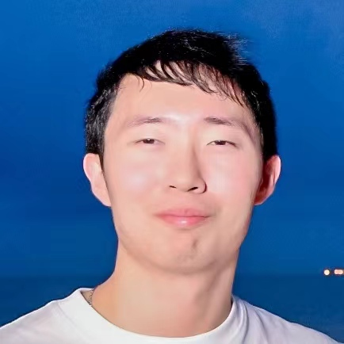

|  |
Jiaqing Lyu
|
I am a third-year master’s student at Peking University.
Before that, I graduated from Dalian University of Technology. I worked with Dr. Yijia Zhang and Dr. Bing Liang on Computational Biology research.
Peking University, China (2022—)
Dalian University of Technology, China (2018—2022)
Dalian No. 24 High School, China (2015—2018)